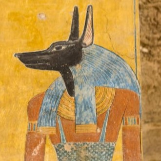
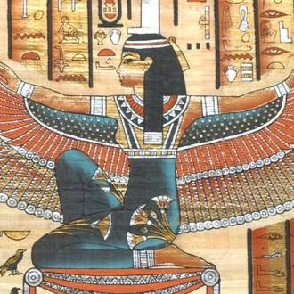
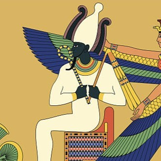
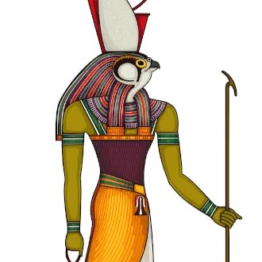

-
Anúbis
Descrição
É associado com a mumificação e a vida após a morte na mitologia egípcia. Também associado como protetor das pirâmides, Anúbis é o deus dos mortos e moribundos, que guiava e conduzia as almas ao mundo dos mortos. Anúbis é comumente representado com cabeça de chacal.
-
Isís
Descrição
Uma das princípais divindades egípcias, acreditava-se que Ísis ajudava os mortos a entrarem no pós-vida da mesma forma que havia feito com Osíris, seu falecido marido. Agraciada pelo dom materno, o invocava em feitiços de cura para beneficiar o povo comumum, e era também considerada como a mãe divina do faraó.
-
Osíris
Descrição
Marido de ísis e pai de Hórus, o deus do julgamento e do além, Osíris, a divindade da vegetação, é conhecido pela traição de seu irmão Seth, que o matou para conseguir o trono, Osíris, vencendo a morte, renasce no além, tornando-se o Senhor da vida pós morte e juiz dos espíritos que lá chegam.
-
Hórus
Descrição
Hórus, o deus dos céus e dos vivos, filho de Ísis e Osíris, é retratado como um falcão e seus olhos representam o Sol e a Lua. Durante a vingança por seu pai, Hórus perdeu um olho, que foi substituído por um amuleto de serpente, que os faraós passaram a usar na frente das coroas. O olho que Hórus perdeu, é o olho da Lua. Esta é uma explicação dos egípcios para as fases da lua, que seria o olho ferido de Hórus.